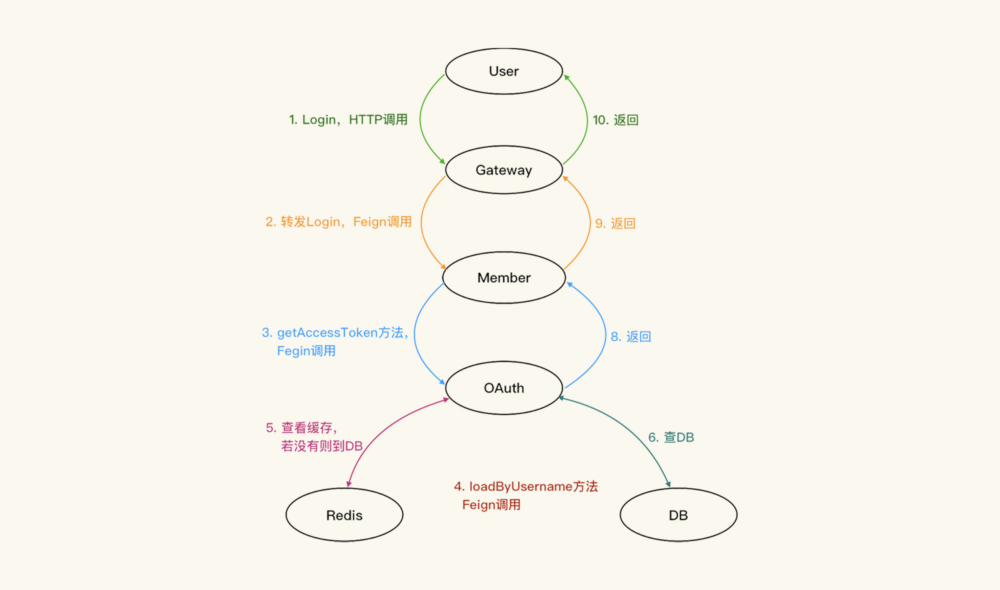
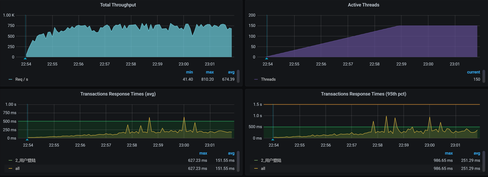

- 00 开篇词 打破四大认知局限，进阶高级性能工程师.md.html
- 01 性能工程：为什么很多性能测试人员无法对性能结果负责？.md.html
- 02 关键概念：性能指标和场景的确定.md.html
- 03 核心分析逻辑：所有的性能分析，靠这七步都能搞定.md.html
- 04 如何构建性能分析决策树和查找瓶颈证据链？.md.html
- 05 性能方案：你的方案是否还停留在形式上？.md.html
- 06 如何抽取出符合真实业务场景的业务模型？.md.html
- 07 性能场景的数据到底应该做成什么样子？.md.html
- 08 并发、在线和TPS到底是什么关系？.md.html
- 09 如何设计全局和定向监控策略？.md.html
- 10 设计基准场景需要注意哪些关键点？.md.html
- 11 打开首页之一：一个案例，带你搞懂基础硬件设施的性能问题.md.html
- 12 打开首页之二：如何平衡利用硬件资源？.md.html
- 13 用户登录：怎么判断线程中的Block原因？.md.html
- 14 用户信息查询：如何解决网络软中断瓶颈问题？.md.html
- 15 查询商品：资源不足有哪些性能表现？.md.html
- 16 商品加入购物车：SQL优化和压力工具中的参数分析.md.html
- 17 查询购物车：为什么铺底参数一定要符合真实业务特性？.md.html
- 18 购物车信息确定订单：为什么动态参数化逻辑非常重要？.md.html
- 19 生成订单信息之一：应用JDBC池优化和内存溢出分析.md.html
- 20 生成订单信息之二：业务逻辑复杂，怎么做性能优化？.md.html
- 21 支付前查询订单列表：如何分析优化一个固定的技术组件？.md.html
- 22 支付订单信息：如何高效解决for循环产生的内存溢出？.md.html
- 23 决定容量场景成败的关键因素有哪些？.md.html
- 24 容量场景之一：索引优化和Kubernetes资源分配不均衡怎么办？.md.html
- 25 容量场景之二：缓存对性能会有什么样的影响？.md.html
- 26 稳定性场景之一：怎样搞定业务积累量产生的瓶颈问题？.md.html
- 27 稳定性场景之二：怎样搞定磁盘不足产生的瓶颈问题？.md.html
- 28 如何确定异常场景的范围和设计逻辑？.md.html
- 29 异常场景：如何模拟不同组件层级的异常？.md.html
- 30 如何确定生产系统配置？.md.html
- 31 怎么写出有价值的性能报告？.md.html
- 我们这个课程的系统是怎么搭建起来的？.md.html
- 结束语 做真正的性能项目.md.html
- 捐赠
13 用户登录：怎么判断线程中的Block原因？
你好，我是高楼。
这节课我们接着来“玩”一下用户登录。在第10讲的课程中，我们以登录功能为例做了一些分析，来说明基准场景中的一些要点。但是，我们还没有把它优化完，所以这节课还要接着来折腾它。
用户登录说起来只是一个很普通的功能，不过它的逻辑一点也不简单。因为登录过程要对个人的信息进行对比验证，验证过程中又要调用相应的加密算法，而加密算法是对性能要求很高的一种功能。复杂的加密算法安全性高，但性能就差；不复杂的加密算法性能好，但安全性低，这是一个取舍的问题。
另外，还有Session存储和同步。对于个大型的系统来说，不管你在哪个系统访问，在调用其他系统时如果需要验证身份就要同步Session信息，并且在做业务时，我们也要把相应的Session信息带上，不然就识别不了。
你看，登录功能实际上会涉及到很多的业务，它其实一点也不简单。所以，这节课我会带着你好好分析用户登录功能，并带你了解在压力过程中业务逻辑链路和整体TPS之间的关系。同时，也希望你能学会判断线程中的BLOCKED原因。
修改加密算法
还记得在第10讲中，我们在基准场景中对登录业务的测试结果吗？在10个压力线程下，TPS达到了100左右。

同时，在第10讲中，我们发现了加密算法BCrypt效率低之后，讨论了两种优化方式：一种是用更快的加密方式，另一种是去掉这个加密算法。当时，我选择把加密算法BCrypt直接去掉。在这节课中，我们来试试第一种方式，把它改为MD5，具体有两个动作：
- 更改加密算法。之前的BCrypt加密算法虽然安全性高，但性能差，所以建议改成MD5。
- 加载所有用户到Redis中。
我们再跑一遍压力场景。注意，在跑这一遍之前，我们只是更改了加密算法，并没有执行加载缓存的动作。我希望一次只做一个动作来判断结果（但是上面两个动作我们都要做哦，请你接着看下去），结果如下：
从上面的结果来看，性能有些上升了，但是还没达到我想要的样子。我希望性能有突飞猛进的增加，而不是现在这样不温不火的样子，看着就来气。所以，我们还是要继续“收拾收拾”这个接口，使用缓存，看下效果如何。
检验缓存的效果
为了确定缓存对后续的性能优化产生了效果，我们可以用两个手段来检验效果：
- 把参数化数据量降下来，只用少量的数据测试一下（请注意，我们只是尝试一下，并不是说用少量的数据来运行场景是对的）；
- 直接加载全部缓存。
我们得到这样的结果：
从曲线上看，登录接口能达到300TPS左右了。但是，我还是觉得不够好，因为从硬件资源上来看，再根据我以往的经验，它应该还能达到更高才对。
而在分析的过程中，再也没有第11讲和第12讲中提到的硬件资源的问题，但是在这里我们通过查看全局监控数据，看到的是us cpu高，说明确实都是业务逻辑在消耗CPU资源了。所以，我们就只有从登陆逻辑入手，来优化这个问题了。
修改登录的逻辑
通过阅读源代码，我整理了这个系统的原登录逻辑：
这个逻辑看着比较啰嗦，其中Member服务调auth服务，倒还能理解。可是，Auth服务为什么还要到Member里取用户名呢？自己直接查缓存或DB不香吗？从架构设计的角度来看，为了避免共享数据库，这样的设计似乎也没啥。只是在我们的优化过程中，需要根据实际环境来做判断。
在我们这个环境中，需要把DB共用，这样Auth服务就可以直接使用数据库，而不用再从Member绕一圈。所以，我们先改成下面这种新的登录逻辑，这样就可以减少一次调用。

修改之后，登录TPS如下：

从结果上来看，TPS确实有增加，已经到700以上了。很好。
这时候是不是就可以结束分析了呢？不是，我们还需要知道当前的瓶颈点在哪，因为根据我的性能理念，每个业务都会有瓶颈点，不管优化到什么程度，除非一直把硬件资源耗光。所以，我们继续接着分析。
看架构图
还是一样，在分析性能瓶颈之前，我们先来看架构图，了解用户登录接口会涉及到哪些服务和技术组件。

从这个架构图中可以看到，登录操作跨了Gateway/Member/Auth三个服务，连接了Redis/MySQL两个组件。图中的MongoDB虽然看上去有线，但实际上登录并没有用上。
了解这些信息之后，我们按照分析逻辑，一步步来分析问题。
拆分时间
我们前面提到，修改登录逻辑后的TPS如下：

可以看到，响应时间已经上升到了100ms左右，所以，我们现在要找出这个时间消耗在了哪里。你可能已经注意到，图中的用户增加到了150。这是为了把响应时间拉大，便于我们分析。下面我们把这个响应时间拆分一下，看看问题出在哪里。
- Gateway服务上的时间
- Member服务上的时间
- Auth服务上的时间

我们看到，Member服务上的时间消耗是150ms左右，Auth服务上的时间消耗有60ms左右。Member服务是我们要着重分析的，因为它的响应时间更长。而Auth上虽然时间不太长，但是也达到了60ms左右，从经验上来说，我觉得还是有点稍长了，最好平均能到50ms以下，所以我们也要稍微关心一下。
全局监控
我们的分析逻辑雷打不动，依旧是先看全局监控，后看定向监控。从下面这张全局监控图的数据来看，worker-7和worker-8的CPU使用率比其他的要高。
既然worker-7/8的CPU使用率要高一点，那我们就要查一下这两个节点上跑着什么样的服务。所以我们来看一下POD的分布，大概看一下每个POD在哪个worker节点上，以便后面分析POD相互之间的影响：

原来，在worker-7和worker-8上，分别运行着响应时间稍高的Auth服务和Member服务。对于这两个服务，我们都要分析，只是得一个一个来，那我们就从auth服务开始。
你可能会问：为什么要先从Auth服务下手呢？没啥原因，就是看它的CPU更红一点。你还可能奇怪：图中其他地方也红了，为什么不关注呢？我来逐一给你分析一下。
图中的worker-1和worker-2，内存使用率相对较大，达到了70%以上。从经验上来说，我几乎没有怎么关心过Linux的内存使用率，除非出现大量的page faults。因为Linux内存在分配给应用程序使用之后，是会体现在Cache当中的。被应用程序Cache住的内存在操作系统上来看都是被使用的，但实际上可能并未真的被使用，这时操作系统会把这部分Cache内存计算到available内存当中，所以说，我们直接看操作系统级别的空闲内存是分析不出问题来的。
在worker-2上，我们看到TCP的Time Wait达到近3万，不过这也不是我关心的点，因为Time Wait是正常的TCP状态，只有端口不够用、内存严重不足，我才会稍微看一眼。
至于worker-1和worker-2的上下行带宽，看起来真是不大。在内网结构中，我们在测试的时候，内网带宽达到过好几Gbps，这点带宽还不足以引起我们的重视。
所以，我们要“收拾”的还是worker-7和worker-8。
既然Auth服务在worker-7上，member服务在worker-8上，就像前面说的，我们不如就从Auth服务开始。
Auth服务定向分析
对于Auth服务，我们从哪里开始分析呢？其实，我们可以按部就班。既然是Auth服务导致worker-7的CPU使用率偏高，那我们就可以走下面这个证据链：

按照这个证据链，我们应该先看进程。不过，仗着傻小子火气壮（俗称：艺高人胆大），我直接就去看线程状态了，想看看能不能凭经验蒙对一把。于是，我打开了Spring Boot Admin的线程页面：

有没有满目疮痍的感觉？人生就是这样，到处都有惊吓。
在我颤抖着手点开一些红色的地方之后，看到了类似这样的信息：
可以看到，阻塞数非常大，达到了842。此外，锁拥有者ID是86676，锁拥有者名称是线程823。
我们抓两段栈出来看一下，找一下锁之间的关系：
-- 第一处：
"http-nio-8401-exec-884" #86813 daemon prio=5 os_prio=0 tid=0x00007f2868073000 nid=0x559e waiting for monitor entry [0x00007f2800c6d000]
java.lang.Thread.State: BLOCKED (on object monitor
at java.security.Provider.getService(Provider.java:1035)
- waiting to lock <0x000000071ab1a5d8> (a sun.security.provider.Sun)
at sun.security.jca.ProviderList.getService(ProviderList.java:332)
.....................
at com.dunshan.mall.auth.util.MD5Util.toMD5(MD5Util.java:11)
at com.dunshan.mall.auth.config.MyPasswordEncoder.matches(MyPasswordEncoder.java:23)
.....................
at com.dunshan.mall.auth.controller.AuthController.postAccessToken$original$sWMe48t2(AuthController.java:46
at com.dunshan.mall.auth.controller.AuthController.postAccessToken$original$sWMe48t2$accessor$jl0WbQJB(AuthController.java)
at com.dunshan.mall.auth.controller.AuthController$auxiliary$z8kF9l34.call(Unknown Source)
.....................
at com.dunshan.mall.auth.controller.AuthController.postAccessToken(AuthController.java)
.....................
-- 第二处：
"http-nio-8401-exec-862" #86728 daemon prio=5 os_prio=0 tid=0x00007f28680d6000 nid=0x553a waiting for monitor entry [0x00007f2802b8c000]
java.lang.Thread.State: BLOCKED (on object monitor
at sun.security.rsa.RSACore$BlindingParameters.getBlindingRandomPair(RSACore.java:404)
- waiting to lock <0x000000071ddad410> (a sun.security.rsa.RSACore$BlindingParameters)
at sun.security.rsa.RSACore.getBlindingRandomPair(RSACore.java:443)
.....................
at com.dunshan.mall.auth.controller.AuthController.postAccessToken$original$sWMe48t2(AuthController.java:46)
at com.dunshan.mall.auth.controller.AuthController.postAccessToken$original$sWMe48t2$accessor$jl0WbQJB(AuthController.java)
at com.dunshan.mall.auth.controller.AuthController$auxiliary$z8kF9l34.call(Unknown Source)
.....................
at com.dunshan.mall.auth.controller.AuthController.postAccessToken(AuthController.java)
.....................
这两个栈的内容并不是同一时刻出现的，说明这个BLOCKED一直存在。但是不管怎么样，这个栈在做RSA加密，它和Token部分有关。
其中，线程http-nio-8401-exec-884是BLOCKED状态，那就说明有其他线程持有这个锁，所以我们自然要看一下线程栈中的waiting to lock <0x000000071ab1a5d8>。其实，如果你有经验的话，一下子就能知道这里面是什么问题。不过，我们做性能分析的人要讲逻辑。
我在这里啰嗦几句，当你碰到这种锁问题，又不知道具体原因的时候，要下意识地去打印一个完整的栈来看，而不是再到Spring Boot Admin里胡乱点。为什么不建议你这么做？原因有这么几个：
- 由于线程太多，点着看逻辑关系比较累；
- 不断在刷，眼晕；
- 我不喜欢。
所以，对于前面遇到的锁问题，我们首先要做的就是到容器中的jstack里打印一下栈，把它下载下来，然后祭出工具打开看一眼。
你可能会问，为什么不用Arthas之类的工具直接在容器里看？主要是因为Arthas的Dashboard在Thread比较多的时候，看起来真心累。
下面这张图就是jstack打印出来的栈，在下载之后用工具打开的效果。
是不是有种买彩票的感觉？看起来有那么多的BLOCKED状态的线程（多达842个），居然一个都没蒙到！我本来想抓BLOCKED状态的线程，并且线程描述是“Waiting on monitor”，但是，从上面的线程描述统计来看，一个也没见。哼，真生气。
这时候，身为一个做性能分析的人，我们一定要记得倒杯茶，静静心，默默地把jstack连续再执行几遍。我在这里就连续执行了10遍，然后再找每个栈的状态。
终于，Waiting on monitor来了：

看起来有得玩了！接下来让我们看看究竟是谁阻塞住了上面的线程。
我们先在相应的栈里，找到对应的持有锁的栈。下面是栈中的阻塞关系。
- 第一个栈

- 第二个栈
你要注意，这是两个栈文件。所以，我们要分别从这两个栈文件里找到各自的对应等待关系。下面这段代码就对应了上面的Waiting线程。
-- 第一处
"http-nio-8401-exec-890" #86930 daemon prio=5 os_prio=0 tid=0x00007f28680a5800 nid=0x561d waiting for monitor entry [0x00007f2800263000]
java.lang.Thread.State: BLOCKED (on object monitor
at java.security.Provider.getService(Provider.java:1035)
- locked <0x000000071ab1a5d8> (a sun.security.provider.Sun)
at sun.security.jca.ProviderList.getService(ProviderList.java:332)
.....................
at com.dunshan.mall.auth.util.MD5Util.toMD5(MD5Util.java:11)
at com.dunshan.mall.auth.config.MyPasswordEncoder.matches(MyPasswordEncoder.java:23)
.....................
at com.dunshan.mall.auth.controller.AuthController.postAccessToken$original$sWMe48t2(AuthController.java:46)
at com.dunshan.mall.auth.controller.AuthController.postAccessToken$original$sWMe48t2$accessor$jl0WbQJB(AuthController.java)
at com.dunshan.mall.auth.controller.AuthController$auxiliary$z8kF9l34.call(Unknown Source)
at org.apache.skywalking.apm.agent.core.plugin.interceptor.enhance.InstMethodsInter.intercept(InstMethodsInter.java:86)
at com.dunshan.mall.auth.controller.AuthController.postAccessToken(AuthController.java)
-- 第二处
"http-nio-8401-exec-871" #86739 daemon prio=5 os_prio=0 tid=0x00007f28681d6800 nid=0x5545 waiting for monitor entry [0x00007f2801a7b000]
java.lang.Thread.State: BLOCKED (on object monitor
at sun.security.rsa.RSACore$BlindingParameters.getBlindingRandomPair(RSACore.java:404)
- locked <0x000000071ddad410> (a sun.security.rsa.RSACore$BlindingParameters)
at sun.security.rsa.RSACore.getBlindingRandomPair(RSACore.java:443)
.....................
at com.dunshan.mall.auth.controller.AuthController.postAccessToken$original$sWMe48t2(AuthController.java:46)
at com.dunshan.mall.auth.controller.AuthController.postAccessToken$original$sWMe48t2$accessor$jl0WbQJB(AuthController.java)
at com.dunshan.mall.auth.controller.AuthController$auxiliary$z8kF9l34.call(Unknown Source)
at org.apache.skywalking.apm.agent.core.plugin.interceptor.enhance.InstMethodsInter.intercept(InstMethodsInter.java:86)
at com.dunshan.mall.auth.controller.AuthController.postAccessToken(AuthController.java)
你看上面locked这一行的锁ID，既然找到了这两处持有锁的栈，那我们就通过上面的栈，到源码中找到这两处栈的代码：
-- 第一处同步代码块
public synchronized Service getService(String type, String algorithm) {
checkInitialized()
// avoid allocating a new key object if possible
ServiceKey key = previousKey
if (key.matches(type, algorithm) == false) {
key = new ServiceKey(type, algorithm, false);
previousKey = key
if (serviceMap != null) {
Service service = serviceMap.get(key)
if (service != null) {
return service;
ensureLegacyParsed()
return (legacyMap != null) ? legacyMap.get(key) : null;
-- 第二处同步代码块
// return null if need to reset the parameters
BlindingRandomPair getBlindingRandomPair(
BigInteger e, BigInteger d, BigInteger n) {
if ((this.e != null && this.e.equals(e)) ||
(this.d != null && this.d.equals(d))) {
BlindingRandomPair brp = null;
synchronized (this) {
if (!u.equals(BigInteger.ZERO) &&
!v.equals(BigInteger.ZERO))
brp = new BlindingRandomPair(u, v);
if (u.compareTo(BigInteger.ONE) <= 0 ||
v.compareTo(BigInteger.ONE) <= 0) {
// need to reset the random pair next time
u = BigInteger.ZERO
v = BigInteger.ZERO
} else {
u = u.modPow(BIG_TWO, n)
v = v.modPow(BIG_TWO, n)
} // Otherwise, need to reset the random pair.
return brp;
return null;
你可以看到，第一处是JDK中提供的getService类采用了全局同步锁定，导致的分配key时产生争用，这个其实在JDK的Bug List中有过描述，详见JDK-7092821。准确来说，它不算是Bug，如果你想改的话，可以换一个库。
第二处是JDK中提供的RSA方法，是为了防范时序攻击特意设计成这样的。RSA中有大素数的计算，为了线程安全，RSA又加了锁。关于RSA的逻辑，你可以去看下源代码的/sun/security/rsa/RSACore.java中的逻辑。
不过，RSA是一种低效的加密方法，当压力发起来的时候，这样的synchronized类必然会导致BLOCKED出现。对此，在源码中有下面这样一段注释，其中建议先计算u/v，可以提高加密效率。
* Computing inverses mod n and random number generation is slow, s
* it is often not practical to generate a new random (u, v) pair for
* each new exponentiation. The calculation of parameters might even be
* subject to timing attacks. However, (u, v) pairs should not be
* reused since they themselves might be compromised by timing attacks,
* leaving the private exponent vulnerable. An efficient solution to
* this problem is update u and v before each modular exponentiation
* step by computing:
*
* u = u ^ 2
* v = v ^ 2
* The total performance cost is small
既然我们已经知道了这两个BLOCKED产生的原因，那下一步的操作就比较简单了。
- 针对第一处锁：实现自己的方法，比如说实现一个自己的分布式锁。
- 针对第二处锁：换一个高效的实现。
至此，我们就找到了应用中BLOCKED的逻辑。因为我们这是一个性能专栏，所以我就不再接着整下去了。如果你是在一个项目中，分析到这里就可以把问题扔给开发，然后去喝茶了，让他们伤脑筋去，哈哈。
不过，这只是一句玩笑而已，你可别当真。作为性能分析人员，我们要给出合情合理并且有证据链的分析过程，这样我们和其他团队成员沟通的时候，才会更加简单、高效。
Member服务定向分析
分析完Auth服务后，我们再来看看Member服务的性能怎么样。因为全局监控数据前面我们已经展示了，所以这里不再重复说明，我们直接来拆分一下对Member服务调用时的响应时间。
- Gateway上的响应时间
- Member上的响应时间
- Auth上的响应时间
从上面的信息来看，这几段都有不同的时间消耗：Member服务上有80毫秒左右，Auth服务上已经有60毫秒左右，明显是有点高了。
我们登录到Member这个服务中，先看整体的资源使用情况。这里我用了最经典传统的top命令：
%Cpu0 : 63.8 us, 12.4 sy, 0.0 ni, 9.2 id, 0.0 wa, 0.0 hi, 14.2 si, 0.4 st
%Cpu1 : 60.3 us, 11.7 sy, 0.0 ni, 11.0 id, 0.0 wa, 0.0 hi, 16.6 si, 0.3 st
%Cpu2 : 59.4 us, 12.0 sy, 0.0 ni, 14.1 id, 0.0 wa, 0.0 hi, 13.8 si, 0.7 st
%Cpu3 : 59.8 us, 12.1 sy, 0.0 ni, 11.7 id, 0.0 wa, 0.0 hi, 15.7 si, 0.7 st
从CPU使用分布上来看，其他计数器都还正常，只是si有点高。这是一个网络中断的问题，虽然有优化的空间，但是受基础架构所限，性能提升得不太多，这也是为什么现在很多企业都放弃了虚拟化，直接选择容器化的一个原因。
针对这个网络中断的问题，我将在后面的课程中仔细给你扒一扒，这节课我们暂且不做过多的讲解。
总结
这节课我用登录功能给你串了一个完整的性能分析场景。
在前面代码修改的部分，性能分析过程是比较快的，我们就是看看哪里的代码逻辑会消耗更多的时间。这个思路就是前面提到的us cpu的证据链。
而接下来我们在分析Auth服务的时候，是先从拆分时间开始一步步走到代码里的，其中最核心的部分是从CPU到栈，再到BLOCKED的判断。当我们看到栈上有BLOCKED的时候，要记得打印栈信息。但是因为有些锁会非常快速地获取和释放，所以就可能会出现打印栈时，看到等某个锁的栈信息，但是整个栈文件中却没有这把锁的情况。这个时候，你就要注意了，我们一定要去连续地多打几次栈，直到抓到对应的锁。
这是分析栈中锁的一个关键，因为我们经常会看到等锁的栈信息，看不到持有锁的栈信息。而连续多打几次栈，就是为了把持有锁和等待锁的栈同时打印出来，否则我们就找不出分析的逻辑了。
接着，当我们看到了持有锁的栈之后，就根据自己业务代码的调用逻辑，一层层地去找是哪里加的锁。至于这个锁加的合理不合理，就和业务逻辑有关了。作为性能分析人员，这个时候我们就可以把开发、业务、架构等人拉到一起讨论。这个锁要不要改，不是做性能的人说了算，而是大家一起说了算。
通过上述的分析，相信你可以看到，在我的性能分析逻辑中，从现象到原理，都需要搞清楚。
课后作业
最后，我给你留几个思考题来巩固今日所学。
- 为什么看到BLOCKED的栈时要连续多打几次栈信息？
- 为什么从性能分析中要从现象到原理？
- 低效的代码有什么优化思路？
记得在留言区和我讨论、交流你的想法，每一次思考都会让你更进一步。
如果你读完这篇文章有所收获，也欢迎你分享给你的朋友，共同学习进步。我们下一讲再见！
© 2019 - 2023 Liangliang Lee. Powered by gin and hexo-theme-book.